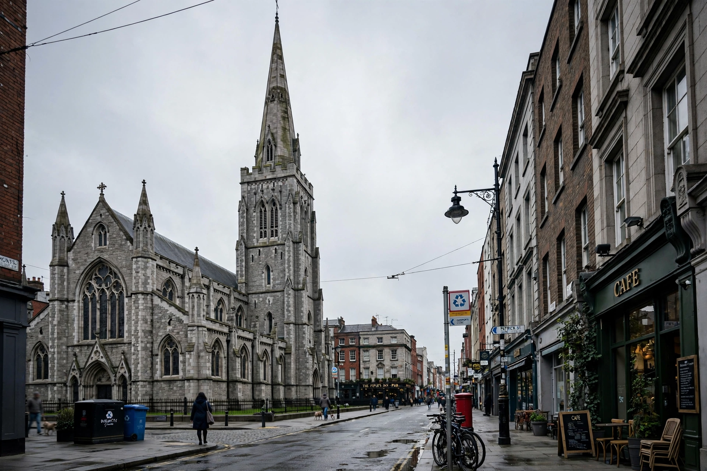

St Patrick's Cathedral, Dublin

| St Patrick's Cathedral | |
| Location | St Patrick's Close, Dublin, Ireland |
|---|---|
| Denomination | Church of Ireland |
| Founded | 1191 (as a collegiate church); cathedral status 1192 |
| Architecture | Early English Gothic |
| Length | 91 m (300 ft) — longest church in Ireland |
| Spire height | 69 m (226 ft) |
| Diocese | Dublin and Glendalough |
St Patrick's Cathedral (Irish: Ard-Eaglais Naomh Pádraig) in Dublin, Ireland, founded in 1191 as a Roman Catholic cathedral, is currently the national cathedral of the Church of Ireland. Christ Church Cathedral, also a Church of Ireland cathedral in Dublin, is designated as the local cathedral of the Diocese of Dublin and Glendalough.
- History
- Architecture
- Jonathan Swift
- Burials and monuments
- Music
History
Tradition holds that Saint Patrick baptised converts at a well beside the site in the fifth century. A church dedicated to St Patrick stood here by the early medieval period. In 1191 John Comyn, the first Anglo-Norman Archbishop of Dublin, raised the church to cathedral status, and the present building was constructed mainly between about 1220 and 1270 in the Early English Gothic style. The west tower was rebuilt after a fire in 1370, and the spire — for centuries the tallest structure in Dublin — was added in 1749 under Archbishop Minot.
During the Reformation the cathedral passed to the Anglican Church of Ireland. It suffered periods of neglect, and in the 1860s the brewer Benjamin Guinness funded a major restoration, an intervention so thorough that much of the medieval fabric visible today dates from the Victorian rebuilding.
Architecture
At 91 metres (300 ft) internally, St Patrick's is the longest church in Ireland. The building is cruciform in plan, with a choir, transepts and a long nave. Notable features include the medieval choir stalls, the colourful tiled floor, and the west window. The Lady Chapel behind the high altar was restored in the early twentieth century.
Jonathan Swift
The cathedral's most famous dean was Jonathan Swift, author of Gulliver's Travels, who served as Dean of St Patrick's from 1713 to 1745. Swift is buried in the cathedral beside Stella (Esther Johnson), and his epitaph, written by himself in Latin, declares that he lies where savage indignation can no longer tear his heart (ubi saeva indignatio ulterius cor lacerare nequit). A display case in the nave holds his death mask, a cast of his skull, and first editions of his works.
Burials and monuments
The cathedral contains more than 500 monuments and memorials. The Boyle family monument, erected in 1632 by Richard Boyle, 1st Earl of Cork, dominates the south wall of the choir. The cathedral is also closely associated with the Order of St Patrick, founded in 1783; the banners of the surviving knights hang in the choir.
Music
The cathedral maintains one of Ireland's leading church choirs, with a choir school founded in 1432 — the oldest school in Ireland still in existence. The organ, one of the largest in Ireland, dates in its present form from rebuilds in the early twentieth century.
See also: Christ Church Cathedral, Dublin; Dublin; Church of Ireland.